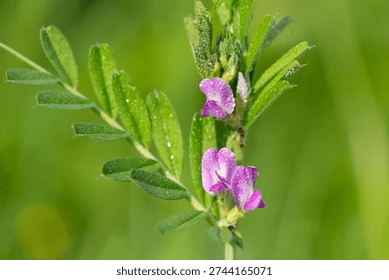

Ayuntamiento de Senés
JARDIN BOTANICO DE ESPECIES AUTOCTONAS DE SENES

Vicia sativa

Las albejanas (Vicia sativa), conocidas también como vezas, son plantas herbáceas anuales pertenecientes a la familia de las leguminosas. Son muy comunes en el ámbito mediterráneo y se caracterizan por su crecimiento trepador o rastrero.
Presentan tallos delgados y flexibles, con hojas compuestas formadas por varios foliolos y terminadas en zarcillos que les permiten sujetarse a otras plantas. Sus flores son pequeñas, de color violeta o púrpura, y dan lugar a vainas que contienen semillas.
Las albejanas se distribuyen ampliamente por la región mediterránea, creciendo en campos, bordes de caminos y terrenos agrícolas. Prefieren suelos bien drenados y ricos en nutrientes.
En el entorno de Senés, son frecuentes en cultivos y campos abiertos, formando parte del paisaje agrícola tradicional.
Las albejanas tienen valor como planta forrajera, siendo utilizadas tradicionalmente en la alimentación del ganado. Además, como leguminosa, contribuyen a mejorar la fertilidad del suelo mediante la fijación de nitrógeno.
En algunos casos, sus semillas han sido utilizadas en la alimentación, aunque su uso principal ha sido agrícola.
Las albejanas simbolizan la fertilidad y la renovación del suelo, debido a su capacidad de enriquecer la tierra.
También representan la cooperación en la naturaleza, al crecer apoyándose en otras plantas.
En Senés, las albejanas es fuente de comida para perdices y otras aves para todo el año.
Nunca se ha hablado que tengan propiedades medicinales.
Florecen en primavera, produciendo flores de tonos violetas que destacan en los campos.
Como otras leguminosas, las albejanas establecen simbiosis con bacterias que fijan nitrógeno en el suelo.
Son una planta clave en la agricultura tradicional y en la mejora de la fertilidad del terreno.